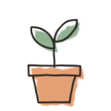
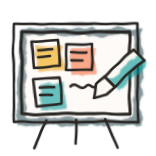

Welcome back
Day 4 of 8 · Thursday 8 October

Check in
“What new idea has the course sparked for you so far?”

Today
Today
What happened on your capstone?

Value added
What useful work did your factory produce?

Waste or friction noticed
What surprised or frustrated you?
Talk in pairs. Add one observed example to each Miro column.
Today
Context engineering teach-back
- Choose three big ideas from your research.
- Make one Miro slide for each idea.
- Put a picture or diagram on every slide.
10 minutes to prepare · then teach the room
Today
Help with a factory problem
Client
2 min
Explain the problem

Consultants
1 min
Ask questions
Consultants
5 min
Discuss ideas while the client listens

Client
2 min
Share what helped
One client per room · add useful notes to your Miro frame
Gallery walk: what did we learn?
Ideas
What did the group discuss?
Visit each room's Miro frame. Share what you learned.
Today
Homework: iteration 003: Customize assembly lines
Today: route in code
let plan = await planner();
let work = await doer(plan);
while (!await validator(work)) {
work = await doer(work);
}Iteration 003: route in a graph
planner → doer
doer → validator
validator → doer
validator → planner
planner → finish
The graph names machines and decides which runs next.
Homework: iteration 004: Multiple assembly lines
$ ./bin/factory --run refactor-001 --line refactor
Weekend homework
1. Iteration 003
- Do tutorial 003
- Customize your assembly line for your project
- Run your capstone through it at least once
2. Iteration 004
- Do tutorial 004
- Think about another line your project could use
- Run your capstone through the factory again
Reading
Read Birgitta Böckeler on harness engineering
Retro and takeaways
“One thing you're taking away.”

See you Tuesday!